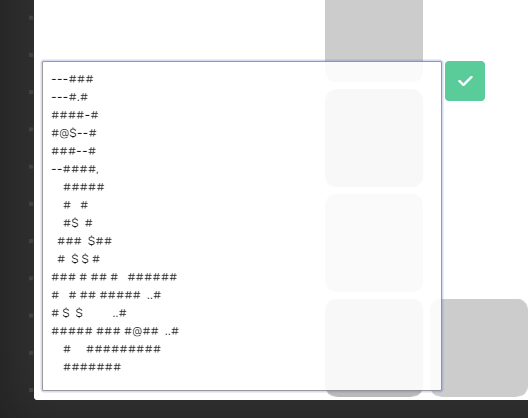

Niraya
Led a four-person team to create a 2D computer game, written in C# using the MonoGame framework (Microsoft XNA) and .NET.
I took on a major leadership role, writing the game’s entire architecture from scratch, including the 2D tilemap framework, kinematic camera, entity logic, and animation system. I integrated an external level editor, Tiled, to handle the complex task of map creation, and applied it to work with the architecture I'd designed.
We worked with GitHub and Trello for organization, both of which were put to heavy use to organize the group and keep us on track for the next milestone. Inspiration was taken from AGILE methodology, with frequent team meetings held in-person or via Discord.
download at people.rit.edu/feb5657/235/project1/; requires .NET 3.1
Tron
Small personal project inspired by gameplay from the eponymous 1980's arcade game Tron.
Wrote entire game from scratch over the summer while working at a camp. Playtested this game with many campers to focus down bugs and improve user experience.
When creating Tron, my primary focus was creating a polished, clean user experience. The player feels immersed in the consistency and simplicity that the game affords.
download source here; requires Processing
osu!maptracker
A responsive site in HTML/CSS/JavaScript, using a Web API to dynamically generate and present a list of user generated content for the online computer game osu!
User experience and interfaces are a passion of mine and I wanted to pay special attention to this when designing this site. I aimed for a product that's both attractive and functional, with clear organization and consistent style.
find on the web at people.rit.edu/feb5657/235/project2/
Sokoban
A browser version of the classic game Sokoban written in JavaScript using PixiJS and Bulma.
For this project, I decided to limit my scope to focus on really delivering a polished experience with no compromises, seeing how far I could take just the simple game of Sokoban. My goal was to create a pleasing interface with responsive visual and audio feedback. I pored over every aspect of the design to make every feature feel complete and purposeful.
find on the web at people.rit.edu/feb5657/235/project3/
